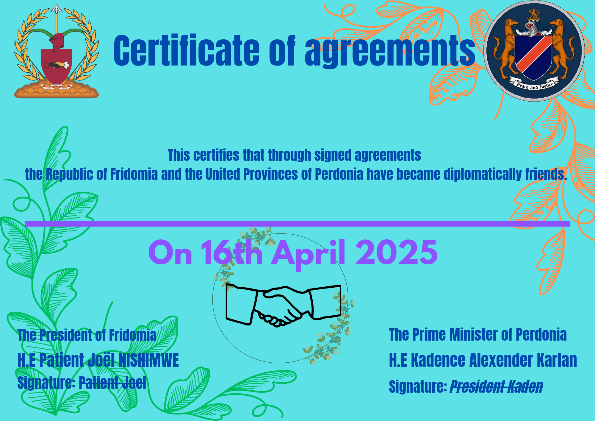

Declaration of Independence of the Republic of Fridomia
Signed on April 21, 2025
We, the founding citizens of the Republic of Fridomia, moved by an unshakable belief in peace, freedom, and dignity for all, do solemnly and peacefully declare our independence and sovereign existence as a free nation, hereafter known as the Republic of Fridomia.
Established in the unclaimed and peaceful land of Marie Byrd Land, Antarctica—a region ungoverned by any recognized state—we claim our place among the community of nations, not by conquest, but by principle.
In accordance with international law, and respecting the Antarctic Treaty, we assert our sovereignty symbolically and peacefully, with no intent to disturb the ecological harmony of the land we cherish.
Founded on the ideals of Freedom, Passion, and Integrity in the Pursuit of Peace, Fridomia is a republic of purpose.
We seek not domination, but understanding; not borders, but bridges. Our nation shall be built by dreamers, thinkers, artists, peacemakers, and all who dare to imagine a better world.
We hereby proclaim:
That Fridomia is a sovereign, independent republic, free from any control or governance by foreign entities.
That our constitution, laws, and symbols represent the will of our citizens and the essence of our values.
That our citizenship shall be open to all people of the world who share our vision and commitment to peace.
That we shall coexist peacefully with all other nations and peoples, and extend friendship to those who respect our sovereignty.
Let it be known, on this day and for all days forward, that the Republic of Fridomia stands as a symbol of what humanity can be when we choose love over hate, peace over conflict, and vision over fear.
Signed with hope,
Patient Joel NISHIMWE Founding President of the Republic of Fridomia
April 21, 2025
Fridomia Launches New Public Service Program
Fridomia has officially launched a new public service program focused on environmental conservation. Citizens are encouraged to participate in weekly cleanup initiatives.
From March 23rd.
New National Flag Raised
The new national flag was proudly made after waiting days, weeks and years. The new flag of the Republic of Fridomia is now chosen and started to be made.
The National Coat of Arms
Today on April 10th, 2025 the Republic of Fridomia has officially published its National Coat of Arms as shown below. If you want to know more please check the Constitution.
New National Seal
Officially, on 13rd April 2025, whole world has got a chance to see the Seal of the Republic of Fridomia. It is full of creativities and reflect to the leading motto of Fridomia: Freedom, Passion and Integrity in pursuit of Peace.
Fridomia has officially signed agreements with the United Provinces of Fredonia. The agreement was all about having diplomatic friendship between those two micronations. The picture you see is
a document that certifies the signed aggreements-signed by both parties.

Presidential Address
President Patient Joel NISHIMWE delivered a speech on national unity. Watch the video below: